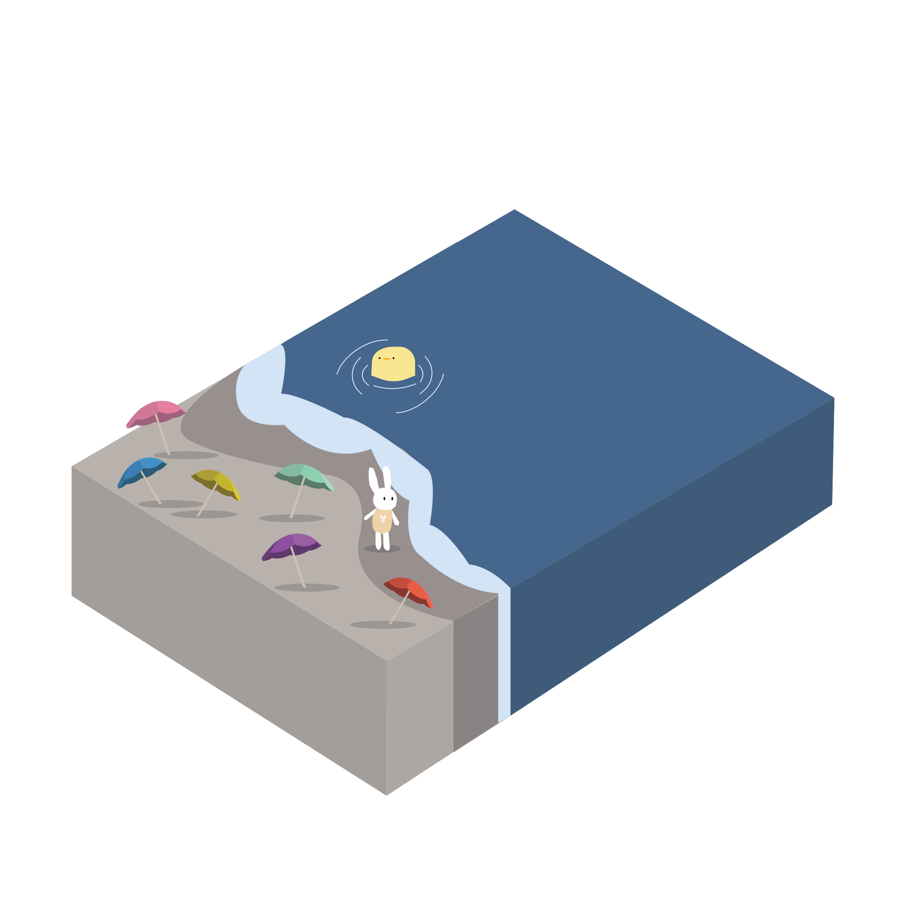
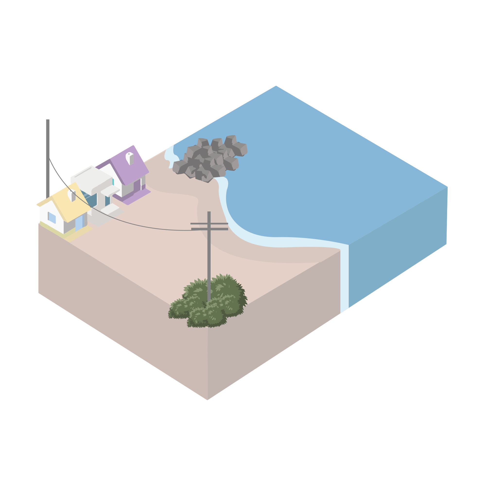
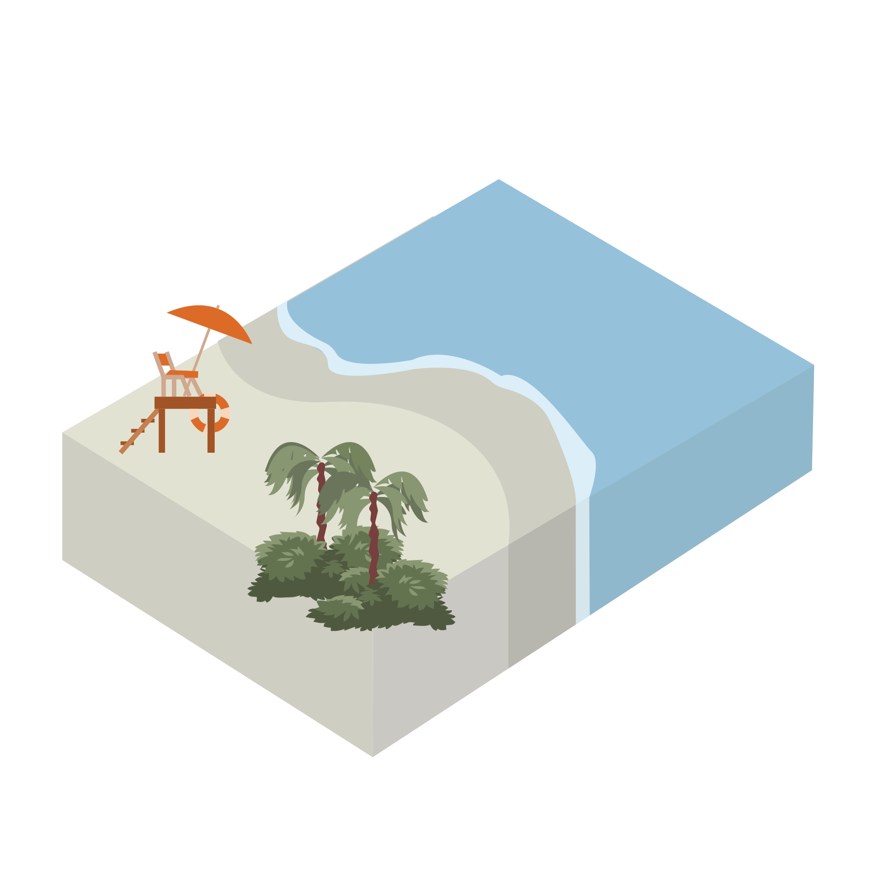
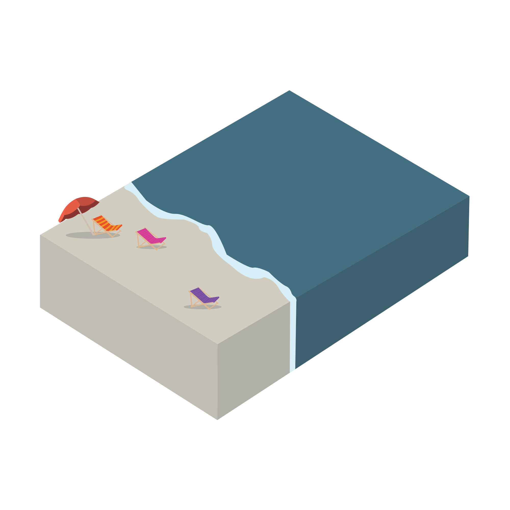
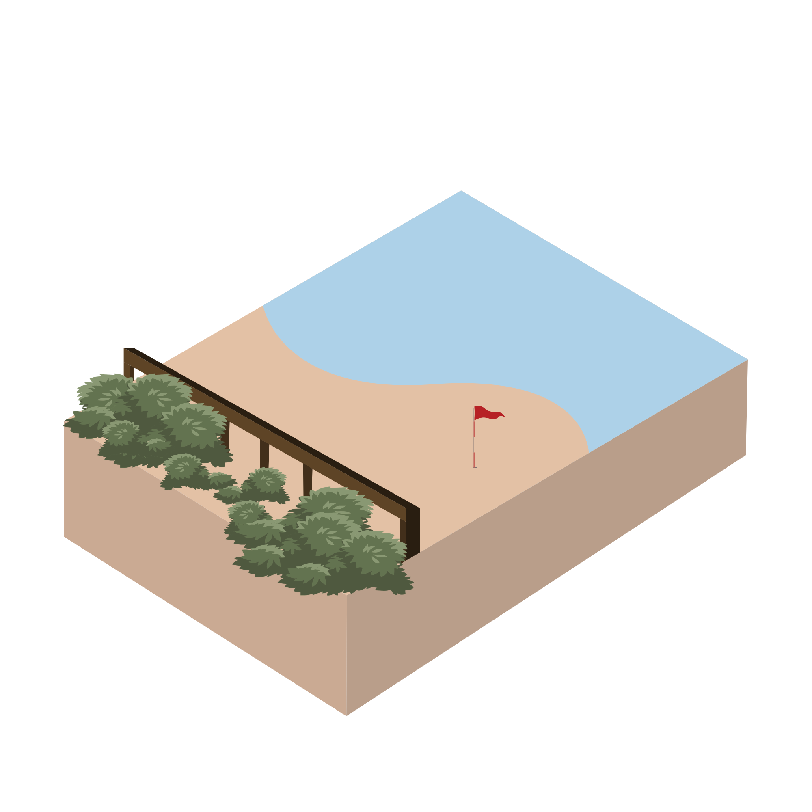

NYC BEACH INDEX

Ocean Parkway to Corbin Place
The easternmost section of Coney Island is popular all summer long, as individuals and families from all over the city come to enjoy the beach’s sand and water and to explore the surrounding neighborhood, known as “Little Odessa” for its Eastern European shops and restaurants.
BRIGHTON BEACH

W. 37th Street to Ocean Parkway
Iconic Coney Island is bursting with activity throughout the summer and even during the off-season. Walk along the famous boardwalk, ride on amusement rides, enjoy swimming or sunbathing on its nearly three miles of sandy beaches, or check out the courts for beach volleyball, handball, and basketball.
CONEY ISLAND

Fort Wadsworth to Miller Field, Midland Beach
A lovely view of the Verazzano Bridge, bike through a scenic trail, jog along the boardwalk, kayak, play tennis, or fish off of the Ocean Breeze Fishing Pier, one of the city's most popular. A park on the beach designed especially for seniors contains chess tables, benches, and bocce courts.
SOUTH BEACH

Ebbitts Street and Cedar Grove Avenue
The city's newest beach is a converted oceanfront bungalow colony. This charming beach is smaller and somewhat more tranquil than its neighbors, Midland Beach and South Beach, and is popular with the area's families.
CEDAR GROVE BEACH

Ocean Avenue to Mackenzie Street
This small, family-friendly beach east of Brighton Beach attracts locals looking for a somewhat calmer beach than its neighbor. Visitors bring full picnic baskets and set up barbecues along the water.
MANHATTAN BEACH
Fort Wadsworth to Miller Field, Midland Beach
Beachgoers can sunbathe while taking in a lovely view of the Verazzano Bridge, bike through a scenic trail, jog along the boardwalk, kayak, play tennis, or fish off of the Ocean Breeze Fishing Pier, one of the city's most popular.
MIDLAND BEACH

Long Island Sound in Pelham Bay Park
Orchard Beach, Bronx's sole public beach, was proclaimed "The Riviera of New York" when it was created in the 1930s.
ORCHARD & PROMENADE

Beach 9th Street, Far Rockaway, to Beach 149th Street
From surfers to swimmers to the Ramones, everyone wants to "hitch a ride to Rockaway Beach." Rockaway Beach is a year-round resource for residents all along the Rockaway peninsula, and it comes alive each summer with millions of visitors.
ROCKAWAY & BOARDWALK

On Raritan Bay and Prince's Bay, Holton to Cornelia Avenues
Love the ocean but think NYC’s beaches are just too chaotic? Wolfe’s Pond Beach is the city’s best-kept secret, a small, calm, and secluded beach that’s a perfect retreat for those looking to get away from summer’s crowds.